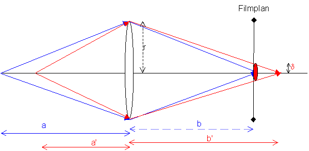
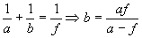
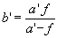
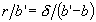
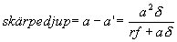
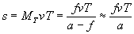

Skärpedjup (nivå 2)
Diffraktion och aberrationer i all ära men det som oftast begränsar kvaliteten i en avbildning är felfokusering, antingen oavsiktlig eller därför att man har en förgrund eller bakgrund som man vill kunna se tydligt samtidigt som det objekt som man fokuserat på.
Anledningen till suddighet vid felfokusering är att de strålar som kommer exvis från ett förgrundsobjekt siktar mot en punkt som ligger bakom filmplanet, detektorarrayen, filmduken, näthinnan eller vad det nu är man använder för att fånga upp bilden.
Situationen ser ut som i nedanstående figur:

Vi ser att storleken på de oskarpa bilden
(d) blir större ju större lins (eller bländaröppning) vi använder.Skärpedjup nivå 3
För det objekt som skärpan är inställd på (blått) gäller linsformeln dvs 
Den gäller också för det förgrundsobjekt som ger bild bakom filmplanet dvs en oskarp bild på filmen 
Vidare ser vi ur likformiga trianglar att 
Sammanställer vi dessa får vi (efter någon timme eller så)

Dvs om vi definierar en viss tillåten oskärpa (
d) som ges av filmens kornighet, detektorarrayens pixeltätehet, objektivets aberrationer eller vad som nu kan vara relevant i den givna situationen, får vi alltså inom vilket intervall objektet får ligga för att inte se suddigare ut än resten.Vi ser att resultatet är rimligt dvs ju större oskärpa vi tillåter ju större blir skärpedjupet.
Bättre skärpedjup får vi vidare genom:
��� ?Rörelseoskärpa (nivå 2)
Vid fotografering av rörliga objekt kommer vi som alla vet att få en utsuddning av bilden i rörelseriktningen. Denna yttar sig som att varje momentan bildpunkt kommer att exponer in efter en linje med längd = den förflyttning objektet utför under exponeringstiden, T. Förflyttningen i objektsplan blir då vT (v=objektets tvärshastighet), vilket ger en förflyttning i bildplan.

Fysikaliskt kommer då ljusenergin att spridas över en linje med denna längd vilket kommer att ge en endimensionell suddighet som matematiskt
beskrivs i nivå 3.Praktiskt kan man prova resultatet i en
matlabsnutt som dessutom behöver en datafi l, som bara läggs i samma directory som m-filen.I rörelseoskärpa i kamera med ridåslutare (hela tiden lika stor öppning) ska vektorn xfalt sättas till [1 1 1 1] (ju fler ettor ju suddigare). Om kameran har en slutare som öppnar och stänger gradvis kan vektorn se ut som i filen.
I fallet med bristande skärpedjup ska yfalt vara likadan som xfalt.
Till
nästa sida (MTF och bildkvalitetTill
nästa kapitel (Laser och laserteknik)Till
innehållsförteckningen